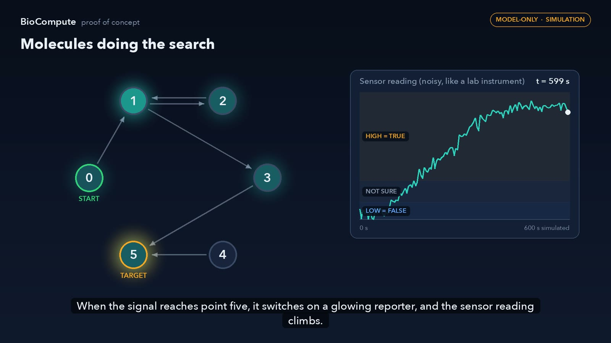
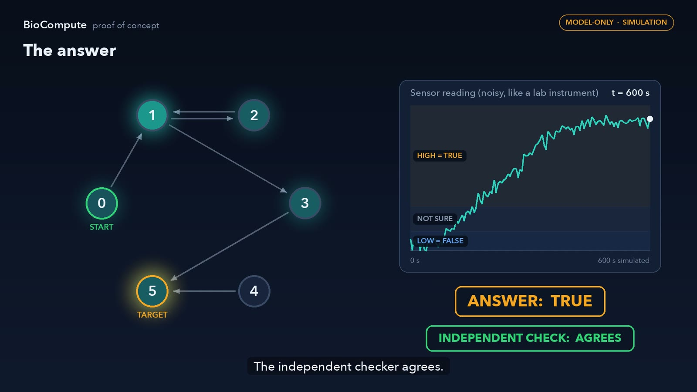
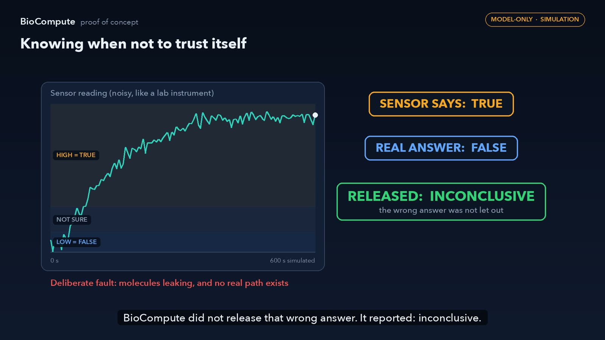

Test a molecular computer in software before you build it in DNA.
BioCompute takes an ordinary program and turns it into a design made of molecules. It simulates those molecules with the randomness real chemistry has, reads them through a noisy simulated instrument, decides an answer, and has an independent method check that answer. The aim is a free, offline place to learn whether a molecular design will work before paying for synthesis and weeks of lab time.
Watch · 3.5 minutes
What BioCompute is, how it works, and what the first results show
A narrated walkthrough built from a full end-to-end run on 28 October 2026. Every graph, trace and number in it is taken from that run.
1080p · 3 min 33 s · narrated by a synthesised voice, with subtitles · download MP4
Why
Molecular computing is expensive to get wrong
A computation built from DNA has to be designed, synthesised and run in a wet lab before anyone learns whether it works. Each attempt takes weeks and uses up reagents. Molecules also misbehave in ways a paper design does not show: reactions leak, components wear out, instruments are noisy. Good design tools and simulators exist (see Prior research), but few start from an ordinary program, and few stop to say when an answer should not be trusted.
Straight to the lab
- Weeks per attempt
- Synthesis and reagents to pay for
- Failures found late, after the money is spent
Simulator first
- Minutes per attempt
- Runs offline on an ordinary computer
- Noise and faults tried before anything is made
Then the lab, with a plan
- Only designs that survived simulation go forward
- Known weak points are tested first
- Lab results feed back to make the simulator more faithful
How it works
Six steps from a program to a checked answer
How each step is built is private. What each step is for is not.
- Ordinary program
You write a small, ordinary program. BioCompute reads what it computes, not how it loops.
- Molecular design
The program becomes a network of molecular signals and gates that reaches the same answer by chemistry.
- Molecule simulation
Molecules are simulated one reaction at a time, with the randomness real chemistry has.
- Noisy sensor
A simulated instrument reads the result with noise, saturation and the chance of failure, as a real one would.
- Decision
An answer is released only when the reading supports it: TRUE, FALSE, or not sure.
- Independent check
A separate, conventional method works out the right answer, so every released answer is scored.
Kept apart on purpose. The simulator never sees the right answer, and the decision is made from the sensor reading alone. Every run is recorded with its random seed and can be replayed to the same result.
From the recorded run
Molecules doing a search
The first program asks whether one point in a small network can reach another by following the arrows. These frames are taken from the recorded simulation; the molecule counts and sensor readings are the real output.



Results · 28 October 2026
What has been shown, and what has not
Two proofs of concept, run end to end in one pass. The first compiles one program and checks its answers. The second adds a readout that checks its own answer before releasing it. How that readout works is not published.
| Measure | Result |
|---|---|
| Automated tests (release build) | 40 passed, 0 failed |
| Basic design, fresh evaluation | 0 wrong and 1 inconclusive in 2,000 trials |
| Demonstration cases | 5 of 5 agree with the independent check |
| Injected faults | Sensor disconnected, sensor saturated, leaking molecules, missing gates: 4 of 4 released as inconclusive, none as a wrong answer |
| Self-checking readout, inside its certified range | 0 wrong in 32,000 runs. A plain readout, read at the same time, was nearly as good: 6 wrong (0.02%) |
| Chemistry drifted outside that range | Plain readout wrong in 14.4% of runs (3,448 of 24,000). Self-checking readout wrong in 0.03% (8 of 24,000), under a proven ceiling below 1% |
| The price of self-checking | Answers "not sure" in 43% of drifted runs, and uses more material per answer |
| Internal consistency | 9 of 9 automated consistency checks across the full record of the run pass |
| Reproducibility | Every result re-created from its random seed. Results first recorded in September 2026 were reproduced byte for byte |
Honest limits
- Simulation only. The chemistry values are assumed, not measured. No DNA has been made.
- One kind of program so far: whether one point can reach another in a small network of up to six points.
- Inside its certified range, the self-checking readout is not much better than a plain readout read late enough. It earns its place when conditions drift, and pays for that in abstentions and material.
- One pre-registered test failed, on cost: the material the self-checking design uses is above the limit that was set in advance.
- The certified range is narrow for leak: it covers only very low leak rates.
- One supporting property is tested but not yet proved, and a second, independently written test set is registered but has not been run.
- Every number here comes from the project's own automated checks and has not been independently reproduced.
Prior research
What this builds on
BioCompute stands on decades of work in molecular programming, chemical kinetics and verification. None of the science below is claimed as new. The table compares BioCompute with the closest prior work. The full list follows: the 87 works cited in the project's own design documents and proof-of-concept reports. Every reference was looked up in Crossref or PubMed, and every DOI was checked to resolve.
| Prior work | What it already does | Where BioCompute differs (a research question, not a claim) |
|---|---|---|
| DNA computing (Adleman 1994) | Solved a graph problem with DNA molecules in the lab | Aims at a developer workflow: design and test in simulation before synthesis |
| Chemical reaction networks as a programming substrate (Soloveichik et al. 2010); CRN++ (Vasić et al. 2018) | Show that reactions can implement computation, and compile an imperative language to them | Starts from an ordinary program and carries its meaning through to a decided, independently checked answer |
| Nuskell (Badelt et al. 2017); Visual DSD (Lakin et al. 2011); compiler-aided seesaw circuits (Thubagere et al. 2017) | Compile reaction networks to DNA strand displacement; simulate and verify designs | Adds a decision step that may decline to answer, and scores every released answer against a separate method |
| Cello (Nielsen et al. 2016); SBOL | Compile logic to genetic circuits; a standard for exchanging biological designs | Not a circuit-design tool; intended to interoperate with such standards rather than compete |
| Češka, Kwiatkowska, Cardelli and colleagues (2012 to 2017) | Robustness analysis, parameter synthesis and model checking for stochastic chemical systems | Asks for a guarantee about the released answer agreeing with the original program |
| Selective classification (Chow 1970); conformal prediction (Vovk et al.) | Abstaining in order to keep errors low | Asks whether that idea carries over to a compiled molecular device |
No novelty is claimed. A structured prior-art search has not been completed. Until it is, nothing on this page should be read as a claim that BioCompute is new.
Full list, by theme
Molecular programming and compilers13
Languages, compilers and design tools that turn a specification into chemical reactions, DNA strand displacement or genetic circuits. The closest prior work to BioCompute.
- Adleman LM (1994). Molecular Computation of Solutions to Combinatorial Problems. Science. doi:10.1126/science.7973651
- Soloveichik D, Seelig G, Winfree E (2010). DNA as a universal substrate for chemical kinetics. Proceedings of the National Academy of Sciences. doi:10.1073/pnas.0909380107
- Lakin MR, Youssef S, Polo F, et al. (2011). Visual DSD: a design and analysis tool for DNA strand displacement systems. Bioinformatics. doi:10.1093/bioinformatics/btr543
- Nielsen AAK, Der BS, Shin J, et al. (2016). Genetic circuit design automation. Science. doi:10.1126/science.aac7341
- Badelt S, Shin SW, Johnson RF, et al. (2017). A General-Purpose CRN-to-DSD Compiler with Formal Verification, Optimization, and Simulation Capabilities. Lecture Notes in Computer Science. doi:10.1007/978-3-319-66799-7_15
- Thubagere AJ, Thachuk C, Berleant J, et al. (2017). Compiler-aided systematic construction of large-scale DNA strand displacement circuits using unpurified components. Nature Communications. doi:10.1038/ncomms14373
- Vasic M, Soloveichik D, Khurshid S (2018). CRN++: Molecular Programming Language. Lecture Notes in Computer Science. doi:10.1007/978-3-030-00030-1_1
- Buecherl L, Mitchell T, Scott-Brown J, et al. (2023). Synthetic biology open language (SBOL) version 3.1.0. Journal of Integrative Bioinformatics. doi:10.1515/jib-2022-0058
- Chen C, Wen J, Wen Z, et al. (2023). DNA strand displacement based computational systems and their applications. Frontiers in Genetics. doi:10.3389/fgene.2023.1120791
- Williams RS, Goswami S, Goswami S (2024). Potential and challenges of computing with molecular materials. Nature Materials. doi:10.1038/s41563-024-01820-4
- Jia S, Lv H, Li Q, et al. (2025). DNA-based biocomputing circuits and their biomedical applications. Nature Reviews Bioengineering. doi:10.1038/s44222-025-00303-8
- Jung H, Collinson E, Hawes AP, et al. (2025). From the Test Tube to the Cell: A Homecoming for DNA Computing Circuits?. Intelligent Computing. doi:10.34133/icomputing.0112
- Zhang Y, Li B, Liu X, et al. (2025). DNA computing function switching by programming base stacking interactions with minimal molecular architecture changes. Nature Communications. doi:10.1038/s41467-025-64406-x
Theory of chemical computation6
What chemical reaction networks can compute, and how their structure constrains their behaviour.
- Horn F, Jackson R (1972). General mass action kinetics. Archive for Rational Mechanics and Analysis. doi:10.1007/bf00251225
- Feinberg M (1987). Chemical reaction network structure and the stability of complex isothermal reactors—I. The deficiency zero and deficiency one theorems. Chemical Engineering Science. doi:10.1016/0009-2509(87)80099-4
- Czerner P, Guttenberg R, Helfrich M, et al. (2024). Fast and succinct population protocols for Presburger arithmetic. Journal of Computer and System Sciences. doi:10.1016/j.jcss.2023.103481
- Alaniz RM, Fu B, Gomez T, et al. (2025). Reachability in restricted chemical reaction networks. Theoretical Computer Science. doi:10.1016/j.tcs.2025.115514
- Amir T, Aspnes J (2025). Privacy in population protocols with probabilistic scheduling. Theoretical Computer Science. doi:10.1016/j.tcs.2024.114926
- Anderson DF, Joshi B (2025). Chemical mass-action systems as analog computers: Implementing arithmetic computations at specified speed. Theoretical Computer Science. doi:10.1016/j.tcs.2024.114983
Verification and guarantees for molecular systems7
Model checking, parameter synthesis and formal guarantees for molecular devices under uncertainty.
- Lakin MR, Parker D, Cardelli L, et al. (2012). Design and analysis of DNA strand displacement devices using probabilistic model checking. Journal of The Royal Society Interface. doi:10.1098/rsif.2011.0800
- Česka M, Šafránek D, Dražan S, et al. (2014). Robustness Analysis of Stochastic Biochemical Systems. PLoS ONE. doi:10.1371/journal.pone.0094553
- Češka M, Dannenberg F, Kwiatkowska M, et al. (2014). Precise Parameter Synthesis for Stochastic Biochemical Systems. Lecture Notes in Computer Science. doi:10.1007/978-3-319-12982-2_7
- Cardelli L, Češka M, Fränzle M, et al. (2017). Syntax-Guided Optimal Synthesis for Chemical Reaction Networks. Lecture Notes in Computer Science. doi:10.1007/978-3-319-63390-9_20
- Westman J, Nyberg M (2018). Conditions of contracts for separating responsibilities in heterogeneous systems. Formal Methods in System Design. doi:10.1007/s10703-017-0294-7
- Wang B, Thachuk C, Soloveichik D (2023). Speed and Correctness Guarantees for Programmable Enthalpy-Neutral DNA Reactions. ACS Synthetic Biology. doi:10.1021/acssynbio.2c00356
- Incer I, Benveniste A, Sangiovanni-Vincentelli A, et al. (2025). Hypercontracts. Formal Methods in System Design. doi:10.1007/s10703-025-00473-6
Errors, leak and binding fidelity8
Why molecular reactions misfire, and established ways to suppress or correct it.
- Hopfield JJ (1974). Kinetic Proofreading: A New Mechanism for Reducing Errors in Biosynthetic Processes Requiring High Specificity. Proceedings of the National Academy of Sciences. doi:10.1073/pnas.71.10.4135
- Ninio J (1975). Kinetic amplification of enzyme discrimination. Biochimie. doi:10.1016/s0300-9084(75)80139-8
- Halperin A, Buhot A, Zhulina E (2004). Sensitivity, Specificity, and the Hybridization Isotherms of DNA Chips. Biophysical Journal. doi:10.1016/S0006-3495(04)74150-8
- Wang B, Thachuk C, Ellington AD, et al. (2018). Effective design principles for leakless strand displacement systems. Proceedings of the National Academy of Sciences. doi:10.1073/pnas.1806859115
- Zhong W, Sczepanski JT (2021). Direct Comparison of d-DNA and l-DNA Strand-Displacement Reactions in Living Mammalian Cells. ACS Synthetic Biology. doi:10.1021/acssynbio.0c00527
- Nagipogu RT, Reif JH (2024). Leak-resilient enzyme-free nucleic acid dynamical systems through shadow cancellation. Journal of The Royal Society Interface. doi:10.1098/rsif.2024.0053
- Ashwood B, Tokmakoff A (2025). Kinetics and dynamics of oligonucleotide hybridization. Nature Reviews Chemistry. doi:10.1038/s41570-025-00704-8
- Mallette TL, Mishra A, Lakin MR (2026). On Degradation-Induced Leak in Heterochiral DNA Strand Displacement Cascades. ACS Synthetic Biology. doi:10.1021/acssynbio.5c00680
Stochastic dynamics, thermodynamics and physical limits8
The noise, energy and information limits every molecular computation lives within.
- Shannon CE (1948). A Mathematical Theory of Communication. Bell System Technical Journal. doi:10.1002/j.1538-7305.1948.tb01338.x
- Landauer R (1961). Irreversibility and Heat Generation in the Computing Process. IBM Journal of Research and Development. doi:10.1147/rd.53.0183
- Gillespie DT (1977). Exact stochastic simulation of coupled chemical reactions. The Journal of Physical Chemistry. doi:10.1021/j100540a008
- Esposito M (2020). Open questions on nonequilibrium thermodynamics of chemical reaction networks. Communications Chemistry. doi:10.1038/s42004-020-00344-7
- Szavits-Nossan J, Grima R (2024). Solving stochastic gene-expression models using queueing theory: A tutorial review. Biophysical Journal. doi:10.1016/j.bpj.2024.04.004
- van Heyningen V (2024). Stochasticity in genetics and gene regulation. Philosophical Transactions of the Royal Society B: Biological Sciences. doi:10.1098/rstb.2023.0476
- Cao Y, Liang S (2025). Stochastic thermodynamics for biological functions. Quantitative Biology. doi:10.1002/qub2.75
- Tu Y (2026). Nonequilibrium Thermodynamics for Biochemical Networks: Energetic Principles of Cellular Function. Annual Review of Biophysics. doi:10.1146/annurev-biophys-021424-112247
DNA neural networks and population coding4
Learning and population-level computation in molecules and in neurons: the long-term direction.
- Pouget A, Dayan P, Zemel R (2000). Information processing with population codes. Nature Reviews Neuroscience. doi:10.1038/35039062
- Panzeri S, Moroni M, Safaai H, et al. (2022). The structures and functions of correlations in neural population codes. Nature Reviews Neuroscience. doi:10.1038/s41583-022-00606-4
- Cherry KM, Qian L (2025). Supervised learning in DNA neural networks. Nature. doi:10.1038/s41586-025-09479-w
- Song T, Qian L (2025). Heat-rechargeable computation in DNA logic circuits and neural networks. Nature. doi:10.1038/s41586-025-09570-2
Engineered cells, RNA and synthetic biology substrates16
Living and RNA substrates, their burden, resource competition and evolutionary stability.
- Song H, Ding MZ, Jia XQ, et al. (2014). Synthetic microbial consortia: from systematic analysis to construction and applications. Chem. Soc. Rev.. doi:10.1039/c4cs00114a
- Boo A, Ledesma Amaro R, Stan GB (2021). Quorum sensing in synthetic biology: A review. Current Opinion in Systems Biology. doi:10.1016/j.coisb.2021.100378
- Dai Y, You L, Chilkoti A (2023). Engineering synthetic biomolecular condensates. Nature Reviews Bioengineering. doi:10.1038/s44222-023-00052-6
- Wu Q, Bazzini AA (2023). Translation and mRNA Stability Control. Annual Review of Biochemistry. doi:10.1146/annurev-biochem-052621-091808
- Deng B, Wan G (2024). Technologies for studying phase-separated biomolecular condensates. Advanced Biotechnology. doi:10.1007/s44307-024-00020-0
- Di Blasi R, Gabrielli J, Shabestary K, et al. (2024). Understanding resource competition to achieve predictable synthetic gene expression in eukaryotes. Nature Reviews Bioengineering. doi:10.1038/s44222-024-00206-0
- Gómez-Schiavon M, Montejano-Montelongo I, Orozco-Ruiz FS, et al. (2024). The art of modeling gene regulatory circuits. npj Systems Biology and Applications. doi:10.1038/s41540-024-00380-2
- Pillai A, Idris A, Philomin A, et al. (2024). De novo design of allosterically switchable protein assemblies. Nature. doi:10.1038/s41586-024-07813-2
- Radde N, Mortensen GA, Bhat D, et al. (2024). Measuring the burden of hundreds of BioBricks defines an evolutionary limit on constructability in synthetic biology. Nature Communications. doi:10.1038/s41467-024-50639-9
- Rambout X, Maquat LE (2024). Nuclear mRNA decay: regulatory networks that control gene expression. Nature Reviews Genetics. doi:10.1038/s41576-024-00712-2
- Strack R (2024). A leap for directed evolution. Nature Methods. doi:10.1038/s41592-024-02221-w
- Byrom DP, Darlington APS (2025). Genetic controllers for enhancing the evolutionary longevity of synthetic gene circuits in bacteria. Nature Communications. doi:10.1038/s41467-025-63627-4
- Gabrielli J, Di Blasi R, Kontoravdi C, et al. (2025). Degradation bottlenecks and resource competition in transiently and stably engineered mammalian cells. Nature Communications. doi:10.1038/s41467-024-55311-w
- Khadake RM, Arora V, Gupta P, et al. (2025). Harnessing Synthetic Riboswitches for Tunable Gene Regulation in Mammalian Cells. ChemBioChem. doi:10.1002/cbic.202401015
- van den Berg N, Thijssen K, Nguyen TT, et al. (2025). Emergent collective alignment gives competitive advantage to longer cells during range expansion. Nature Communications. doi:10.1038/s41467-025-67791-5
- An B, Tang TC, Zhang Q, et al. (2026). Synthetic circuits for cell ratio control. Nature. doi:10.1038/s41586-026-10259-3
DNA data storage and synthesis10
Writing, keeping and reading digital data in DNA, and the error channels involved.
- Erlich Y, Zielinski D (2017). DNA Fountain enables a robust and efficient storage architecture. Science. doi:10.1126/science.aaj2038
- Organick L, Chen YJ, Dumas Ang S, et al. (2020). Probing the physical limits of reliable DNA data retrieval. Nature Communications. doi:10.1038/s41467-020-14319-8
- Press WH, Hawkins JA, Jones SK, et al. (2020). HEDGES error-correcting code for DNA storage corrects indels and allows sequence constraints. Proceedings of the National Academy of Sciences. doi:10.1073/pnas.2004821117
- Gimpel AL, Stark WJ, Heckel R, et al. (2023). A digital twin for DNA data storage based on comprehensive quantification of errors and biases. Nature Communications. doi:10.1038/s41467-023-41729-1
- Bar-Lev D, Sabary O, Yaakobi E (2024). The zettabyte era is in our DNA. Nature Computational Science. doi:10.1038/s43588-024-00717-1
- Pichon M, Hollenstein M (2024). Controlled enzymatic synthesis of oligonucleotides. Communications Chemistry. doi:10.1038/s42004-024-01216-0
- Huang Q, Duan J, Xi M, et al. (2025). Emerging preservation materials for long-term DNA-based data storage. Chemical Engineering Journal. doi:10.1016/j.cej.2025.161245
- Whritenour K, Civelek M, Farnoud F (2025). Constrained coding for error mitigation in nanopore-based DNA data storage. Scientific Reports. doi:10.1038/s41598-025-08531-z
- Rebimbas R, Glória I, Chegão J, et al. (2026). DNA as a data storage medium. Journal of Biotechnology. doi:10.1016/j.jbiotec.2026.03.003
- Yu H, Lu Z, Li D, et al. (2026). Random access elevates DNA from a storage medium to a storage system. Trends in Biotechnology. doi:10.1016/j.tibtech.2026.06.020
Model validation, calibration, evidence and statistics15
How to test a model against data, keep evidence traceable, and bound an error rate honestly.
- CLOPPER CJ, PEARSON ES (1934). THE USE OF CONFIDENCE OR FIDUCIAL LIMITS ILLUSTRATED IN THE CASE OF THE BINOMIAL. Biometrika. doi:10.1093/biomet/26.4.404
- Chow C (1970). On optimum recognition error and reject tradeoff. IEEE Transactions on Information Theory. doi:10.1109/tit.1970.1054406
- Le Novere N (2006). BioModels Database: a free, centralized database of curated, published, quantitative kinetic models of biochemical and cellular systems. Nucleic Acids Research. doi:10.1093/nar/gkj092
- Anderson J, Papachristodoulou A (2009). On validation and invalidation of biological models. BMC Bioinformatics. doi:10.1186/1471-2105-10-132
- Sbalzarini IF (2013). Modeling and simulation of biological systems from image data. BioEssays. doi:10.1002/bies.201200051
- Hasdemir D, Hoefsloot HC, Smilde AK (2015). Validation and selection of ODE based systems biology models: how to arrive at more reliable decisions. BMC Systems Biology. doi:10.1186/s12918-015-0180-0
- Mina E, Thompson M, Kaliyaperumal R, et al. (2015). Nanopublications for exposing experimental data in the life-sciences: a Huntington’s Disease case study. Journal of Biomedical Semantics. doi:10.1186/2041-1480-6-5
- Giglio M, Tauber R, Nadendla S, et al. (2019). ECO, the Evidence & Conclusion Ontology: community standard for evidence information. Nucleic Acids Research. doi:10.1093/nar/gky1036
- Malik-Sheriff RS, Glont M, Nguyen TVN, et al. (2019). BioModels—15 years of sharing computational models in life science. Nucleic Acids Research. doi:10.1093/nar/gkz1055
- Mitra ED, Hlavacek WS (2019). Parameter estimation and uncertainty quantification for systems biology models. Current Opinion in Systems Biology. doi:10.1016/j.coisb.2019.10.006
- Vovk V, Gammerman A, Shafer G (2022). Algorithmic Learning in a Random World. Springer, 2nd edition. doi:10.1007/978-3-031-06649-8
- Nanda P, Kirschner DE (2023). Calibration methods to fit parameters within complex biological models. Frontiers in Applied Mathematics and Statistics. doi:10.3389/fams.2023.1256443
- Wang C, Hwang W, Song X (2024). Biomarker data with measurement error in medical research: A literature review. WIREs Computational Statistics. doi:10.1002/wics.1641
- Qiao L, Khalilimeybodi A, Linden-Santangeli NJ, et al. (2025). The Evolution of Systems Biology and Systems Medicine: From Mechanistic Models to Uncertainty Quantification. Annual Review of Biomedical Engineering. doi:10.1146/annurev-bioeng-102723-065309
- Sauro HM, Agmon E, Blinov ML, et al. (2025). From FAIR to CURE: Guidelines for Computational Models of Biological Systems. ArXiv. PMID 40034129
Related simulation tools named in the design documents: COPASI, BioNetGen, Virtual Cell and Smoldyn.
Where it is going
From one program to a playground for molecular builders
None of the following exists today. It is the direction the work is designed for. Each step is taken only after the one before it has been tested.
A free, offline simulator Planned
Released as open source and run on an ordinary computer, so anyone can test a molecular design without a lab or a cloud bill.
A wet lab behind the playground Planned
Designs that pass in simulation move to real lab runs, and every lab result is used to make the simulator more faithful.
Calibrated chemistry Next
Measure real reaction rates and leak, and fit the simulator to them, so a design that passes in software means something in the tube.
More kinds of programs Planned
Beyond network search, one kind at a time, each admitted only after it passes the same end-to-end checks.
Therapeutic RNA design Planned
Testing RNA-based therapeutic designs in simulation before they are synthesised.
DNA data storage Planned
Vendor-neutral, encrypted storage of digital data in DNA, with the same habit of checking every read.
The long view
Learning systems that compute in molecules, and bio-native processors for AI. These are meant to work alongside classical and quantum computers, not to replace them, on the problems molecules suit best: massively parallel search, sensing and computing inside chemistry itself. This is a research direction, not a capability, and it depends on every step above holding up.
Milestones
- Platform design
- Design documents for the whole path from program to physical validation
- Proof of concept 1
- One program compiled, simulated, read and independently checked
- Proof of concept 2
- Self-checking readout; full run reproduced on 28 October 2026
- Independent test set
- A second, independently written test set, registered in advance
- Wet-lab calibration
- A detailed model of one molecular gate, then fitting to measured data
Collaborate
Most useful now: wet-lab partners and hard critics
Groups who can run DNA strand displacement experiments, and researchers in molecular programming willing to test these claims hard, are the most valuable help at this stage. Please get in touch by email or through github.com/nabvian.